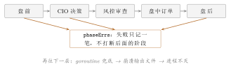

第九章如果 AI 突然失联，交易还继续吗？
9.1窗口没了
那是一个交易日的下午。 我在做别的事，系统在后台跑。屏幕右下角的托盘图标还在，可当我点开主窗口的时候，它闪了一下就消失了。整台程序没了。 我先去看日志。日志文件的最后一行是正常的——“[QuantBot] Logging system initialized successfully” 之后一路都是常规输出，没有报错、没有警告、没有异常堆栈。它写到某一刻，就停了。 然后我去看 Windows 的事件查看器。什么都没有。 一个程序在我面前消失，而我手上没有任何一条线索。那种感觉不是“出错了”，而是“出错这件事没有被记录下来”。我甚至不能说清它是几点几分死的、死在哪个环节。
想象一辆自动驾驶汽车。它的转向、制动都由电子系统控制——效率高、响应快，这是它存在的理由。
但没有任何一家车厂会说：“因为电子系统很可靠，所以方向盘可以拆掉。”
方向盘留着的理由，不是“电子系统不够聪明”，而是“电子系统可以坏，而当它坏的那一刻，车上的人必须还有办法把车停下来”。
机械备份的设计有一个共同点：它不追求和主系统一样好，它只追求在主系统消失之后，车还是可控的。
9.2不给它方向盘，会付出三种代价
我在复盘这件事的时候发现，问题不是一个，而是三个，而且它们的严重程度是递增的。 代价一：一次调用失败，等于一天不做决定。如果那把“AI 失联就停下”的规则写死，那么模型接口一次抖动、一次超时、一次返回了格式不对的文本，当天的决策就整个空了。系统还活着，但它交出了方向盘——今天不选股、不调整、不出方案。 代价二：一个环节失败，拖垮后面的所有环节。盘前、决策、风控、盘中、盘后是一条流水线。如果第一个环节抛出一个错误就让整条流水线停下来，那么“盘前因某个数据源超时而失败”会连带导致“盘后不复盘、不结算”。用户第二天打开软件，会看到账面数据是断的。 代价三：进程直接死掉，什么都没留下。这是最严重的一种，也是我遇到的那种。前两种是“功能退化了”，第三种是“连退化这个词都无从谈起”——因为没有任何记录，你无法判断它是功能退化还是根本没跑。 所以“AI 失联了怎么办”这个问题，正确的问法不是一句话，而是五句话：- 单次调用失败，怎么办？
- 单个阶段失败，怎么办？
- 单个后台任务崩了，怎么办？
- 整个进程崩了，怎么办？
- 那个“决策脑”本身坏了，怎么办？
9.3一个差不多对的模型：挂了就什么都不做
我先想到的模型最简单，也最安全：AI 一失联，今天就什么都不做。 这个模型有它的道理。它的逻辑是：既然决策依赖 AI，那 AI 不在，就不该做决策——总比乱做强。在很多系统里，这是对的。 但它在 A 股里有一个明显的裂缝：“什么都不做”本身也是一个决定，而且是有代价的决定。一个持仓已经触发止损的交易日，你不卖出，就是把风险留着过夜。所以“安全停摆”并不安全——它把“不决策”当成了中立，可市场不会因为你不决策就停止给你计分。 第二个裂缝更隐蔽：这个模型把“AI 失联”当成一个整体事件，而它其实是一个局部事件。系统里一次决策要用到三次独立的模型调用（主张、异议、辩论），外加晨间简报这类各自独立的任务，它们不会一起挂。多数时候是某一路挂了，另外两路好好的。 把这两条裂缝补上，模型就变成三层：本章的骨架：退化的三层
第一层，退回规则。AI 给不出意见，就用规则本来就算出的那个数——规则门本身就是一份完整、可执行、可复盘的决定，不是“假数据”。
第二层，局部降级。某一路意见缺席，就少一路；某个阶段失败，就记一笔，其余阶段照跑。缺席是合法的，编造不是。
第三层，进程不灭。后台任务崩溃要留在日志里，致命崩溃要留在磁盘上，那个“决策脑”不允许被中途拆走。
9.4第一层：单次调用失败，退回规则
先看最小的一格：一次 LLM 调用失败了。 这里的“失败”包括四种：模型没配置、调用报错、超时、以及返回了内容但解析不出结构。四种的处理方式完全一样——完全回退到规则决策，一个字的意见都不采纳。源码在这里写得很直白：internal/cio/proposal.go）func (c *CIOEngine) decideProposalGate(ctx context.Context, in proposalInput, ruleRate float64) *proposalGateResult {
evidence := buildEvidenceLines(in)
res := &proposalGateResult{Evidence: evidence, Effective: ruleRate, KellyScale: 1.0}
prop := c.genDecisionProposal(ctx, in) // Phase1 主张
if prop == nil {
log.Printf("[CIO] 决策主张不可用，完全回退规则决策（有效仓位=%.2f）", ruleRate)
return res // 有效仓位 = ruleRate
}
...
}Effective: ruleRate——在问 AI 之前，答案就已经先填成“规则给的那个数”了。这是一种很聪明的写法：回退不是“出错时才去补的补丁”，而是“默认状态”。AI 的意见如果成功拿到，就把这个默认值改小（后面所有的动作都只能把它改小）；拿不到，默认值原样留下。
ruleRate 是从哪来的？它是六维判势给出的仓位系数（第 第十九章 章）。这里有一个真实的细节值得记下来：六维判势本身也不可用时，ruleRate 取 \(1.0\)——也就是“不因为 AI 挂了而额外惩罚，也不因为 AI 挂了而额外放行”，让后面的风控层去做它该做的事。
另外三个 LLM 阶段（异议评审、多空辩论，以及主张官本身）各自设了 \(60\) 秒的超时。超时之后调用返回失败，于是走的就是上面那条路：返回 nil、不改变门控。超时不是一个异常状态，它是一个设计好的出口。
9.5第二层：一个阶段失败了，其余阶段照跑
现在把视角放大一格：如果失败的不是一次调用，而是一整个阶段呢？ 系统的日常投资工作流有五步，固定顺序是：盘前 → CIO 决策 → 风控审查 → 盘中订单 → 盘后。它的写法不是“遇到错误就返回”，而是“把错误收集起来，继续往下走”：internal/agentworkflow/workflow_engine.go）var phaseErrs []string
// Step 1: 盘前阶段
if err := we.ExecutePreMarketPhase(instance.InstanceID); err != nil {
log.Printf("[WorkflowEngine] 盘前阶段失败(继续后续阶段): %v", err)
phaseErrs = append(phaseErrs, "盘前:"+err.Error())
}
// Step 2: CIO决策阶段
if err := we.ExecuteCIODecisionPhase(instance.InstanceID); err != nil {
log.Printf("[WorkflowEngine] CIO决策阶段失败(继续后续阶段): %v", err)
phaseErrs = append(phaseErrs, "CIO决策:"+err.Error())
decision = &InvestmentDecision{} // 失败时用空决策占位，避免后续阶段解引用 nil
}
// Step 3: 风控审查阶段
if err := we.ExecuteRiskReviewPhase(instance.InstanceID, decision.RelatedTaskIDs); err != nil {
phaseErrs = append(phaseErrs, "风控审查:"+err.Error())
}
// Step 4~6: 盘中订单 → 盘后，同样各自收集错误，各自继续phaseErrs 是一张“欠账清单”。每个阶段失败，就往里记一笔，然后继续。全部跑完之后，如果清单不空，函数返回一个错误，日志里写着“日常投资工作流完成（含 \(N\) 个阶段失败）”。注意这句话的措辞：它说的是“完成（含失败）”，不是“中止”。
第二，空决策占位这个小动作，救的是下一行。看第二段：如果 CIO 决策阶段失败了，代码不是让 decision 保持 nil，而是把它赋成一个空的 InvestmentDecision。为什么？因为第三段要读 decision.RelatedTaskIDs——如果 decision 是 nil，这一读就是空指针解引用，在网络编程里叫“访问了不存在的东西”，在 Go 里就是一次 panic。一个为“防止下一行崩溃”而存在的空壳对象，是容错设计里最不起眼、也最不可省的一块砖。
第三，这套写法有一个必须说清楚的代价。阶段会带着“上一步没成功”的状态继续跑。所以每个阶段自己必须能处理“输入不全”的情况——比如风控审查拿到的是一张空的任务 ID 列表。容错从来不是免费的，它的账单开在“每个下游都要能接受残缺的输入”上。
调度层还有一条同源的规则：盘后分析的主周期如果出错，每日结算、盘口日频摘要、每日复盘这三件事仍然照常执行（internal/scheduler/auto_scheduler.go 的 runPostMarketAnalysis）。理由很实在——盈亏结算和复盘一断，第二天的账面数据就是错的，而这个错误会一路传下去。
9.6第三层：后台任务崩了，进程还得活着
再放大一格：如果一个后台任务内部 panic 了呢？ 在 Go 里，一个 goroutine 里没有被 recover 的 panic 会直接终止整个进程。这句话的分量要体会一下：你为了不阻塞主流程而开出去的那个后台任务，反过来有能力杀死整个程序。 所以系统的规矩是：后台 goroutine 一律带兜底。工具函数SafeGo（internal/util/goroutine.go）就是干这个的——它启动 goroutine 时先挂上一个 defer recover()，崩了就把名字和原因写进日志，然后安静地结束：
internal/util/goroutine.go）func SafeGo(name string, fn func()) {
go func() {
defer func() {
if r := recover(); r != nil {
log.Printf("[Goroutine] Panic recovered in %s: %v", name, r)
}
}()
fn()
}()
}9.6.1那次闪退的根因：DLL 被拆走了
系统的“决策脑”是一个独立的 DLL 文件agent.dll。它是一个 c-shared 的 Go 动态库，独立资产，被主程序加载进同一个进程使用。
问题出在那张“用完就还”的清单上。写代码的时候，我给它的加载器配了一个释放入口 Close()，里面调的是 a.dll.Release()——像一个规矩的程序员那样，加载了的东西用完就卸。
出事的地方在于：这个 DLL 内部有它自己的后台 goroutine。主程序这边把 DLL 卸掉、内存回收，那些还活着的内部 goroutine 并不知道自己脚下的代码已经被搬走了。它们继续执行，于是访问了一段已经释放的内存。
Windows 给这种行为起了个名字：ACCESS_VIOLATION，错误码 0xC0000005。它不是“程序逻辑错了”，它是“执行了一段不属于你的内存”。这种错误不经过 Go 的 log 包，也不经过任何一层 recover——它是操作系统级别的、立即生效的终止。
于是就有了本章开头那一幕：程序消失、日志干净、事件查看器无记录。
修复方式只有一句话：不再卸载它。让 DLL 在进程的整个生命周期里常驻——加载之后就不再释放。库里的那个 Close() 入口还在，但决策脑不去调它。
我当时的想法很朴素：这个 DLL 只在决策时用，一天用一次，卸载的时候恰好撞上内部 goroutine 在跑，能有多大概率？
先把这个“概率”算清楚。先做两个明确的假设。
在假设 9.1 之下，一年（按 \(365\) 天）里至少触发一次的概率是
假设 9.1（独立同概率的崩溃单元）
设系统每天执行 \(N\) 次“有可能触发该缺陷的单位操作”，每次触发的概率都是同一个 \(p\)，且各次相互独立。
\[\Prob(\text{至少一次}) = 1 - (1-p)^{365N}. \tag{9.1}\]
现在代入两个数。系统的调度主循环是 \(30\) 秒一次 ticker，一天就是 \(N = 2880\) 次（这是一个真实的参数，见 internal/scheduler/auto_scheduler.go）。
若单次概率 \(p = 10^{-8}\)（一亿分之一），代入式 式 (9.1) 得一年 \(1.0\%\)；若 \(p = 10^{-6}\)（百万分之一），得一年 \(65\%\)。
两个数放在一起看：同一个“极小概率”，一亿分之一意味着大约九十五年才碰上一次，而百万分之一则是“大概率今年一定会遇上”。\(7 \times 24\) 运行的系统把次数放大了两千八百多倍——\(N\) 越大，\(p\) 有多小就越不重要。
结论不是“要小心一点”，而是：在这类系统里，“会不会发生”不该是设计依据，“发生了会怎样”才是。判断标准应该换成一条：这个错误一旦发生，会不会让整个进程消失？如果会，它就必须有专门的、不依赖 recover 的记录通道。这才是那次闪退教我的东西。
那次事故里，我最长一段时间被这个想法困住：日志最后一行很正常，所以我一直在查“那个正常的时刻之前发生了什么业务逻辑”，查了很久。
方向从一开始就错了。Go 运行时的致命 panic 不走 代码 9.4把致命崩溃接出来（节选，
log 包，它直接写向标准错误输出；而这个程序是一个 GUI 程序（Wails），它没有给人看的控制台。于是致命崩溃的完整堆栈被写到一片没人接收的地方，然后消失。
修复办法是给这条通道单独接一根管子：在主程序启动的最早阶段，用 debug.SetCrashOutput 把运行时崩溃输出重定向到一个独立文件。
main.go）crashPath := filepath.Join(logDir, "crash_dump.txt")
if cf, cerr := os.OpenFile(crashPath, os.O_CREATE|os.O_WRONLY|os.O_TRUNC, 0666); cerr == nil {
// SetCrashOutput 持有该文件供运行时写入，运行时负责其生命周期，勿手动 Close
debug.SetCrashOutput(cf, debug.CrashOptions{})
}log/crash_dump.txt。注意代码注释里那句“运行时负责其生命周期，勿手动 Close”——这份文件的生命周期被交给了运行时，因为写它的时刻，程序已经在死了，你没法指望它还能优雅地关闭谁。
这一条的教训可以推得很远：可观测性不是框架附赠的，它是一个必须被专门设计的部件。日志系统在正常工作的时候，你看不出它会不会漏掉什么；只有到崩溃那天，你才知道它到底兜住了哪一层。所以对“最后一层”必须单独安排：一条不经过业务代码、不依赖任何中间件的通路。
这是对“回退”最常见的误读。很多人一听“AI 失败就退回规则”，第一反应是：那今天的结果是不是半真半假？
不是。要区分两件事：降级使用假数据，和更换决策来源。
规则门给出的仓位系数，是系统用真实行情算出来的、原本就一直在用的数——在引入 AI 之前，系统就是靠它运转的。AI 的主张之所以被加进来，是因为它能在规则之上再收紧一点；它挂掉，只是“收紧的那只手松开了”，规则门本身仍然是一份完整、可执行、可复盘的决策。
真正的红线在另一个地方，而且前面几章反复出现过：不许为了跑完流程而填一个假意见。辩论解析不了，返回
nil，不塞一个“中性”；主张拿不到，退回规则，不编一个方向。第 第八章 章那条“缺数据就少投票，而不是补一个假票”的规矩，和“AI 挂了就退回规则，而不是编一个主张”的规矩，是同一条规矩的两种说法。
| 失效的层级 | 系统的行为 | 真实出处 |
| 单次 LLM 调用（未配置 / 失败 / 超时 / 解析失败） | 完全回退规则；生效仓位直接取 ruleRate；六维不可用时 ruleRate 取 \(1.0\) | internal/cio/proposal.go |
| 单个工作流阶段失败 | 错误记入 phaseErrs，其余阶段继续；CIO 决策失败时用空决策占位防 nil 解引用 | internal/agentworkflow/workflow_engine.go |
| 盘后主周期失败 | 每日结算、盘口日频摘要、每日复盘仍照常执行 | internal/scheduler/auto_scheduler.go |
| 后台 goroutine 内 panic | defer recover() 记下任务名与原因，进程继续 | internal/util/goroutine.go、main.go |
| 未被 recover 的致命崩溃 | 堆栈写入 log/crash_dump.txt，不再静默消失 | main.go |
| 决策脑 DLL 被卸载 | 不再卸载：DLL 在进程整个生命周期内常驻 | internal/agentdll/loader_windows.go |
表中“超时”指各 LLM 阶段各自的 \(60\) 秒调用超时；超时与失败走同一条回退路径。
系统源码 internal/cio/proposal.go、internal/agentworkflow/workflow_engine.go、internal/scheduler/auto_scheduler.go、internal/util/goroutine.go、main.go、internal/agentdll/loader_windows.go；事故与修复见本项目真实修复记录；核对时间 2026-09-24。

9.7真实出处与动手试一试
- 五阶段工作流与
phaseErrs、空决策占位：internal/agentworkflow/workflow_engine.go，函数ExecuteCompleteDailyWorkflow。 - 硬回退规则决策与 \(60\) 秒超时：
internal/cio/proposal.go，函数decideProposalGate/genDecisionProposal/challengeProposal/debateProposal。 - 盘后主周期失败仍照常结算与复盘：
internal/scheduler/auto_scheduler.go，函数runPostMarketAnalysis。 - 后台 goroutine 兜底：
internal/util/goroutine.go的SafeGo，以及main.go的appRecover。 - 致命崩溃输出重定向：
main.go，debug.SetCrashOutput\(\to\)log/crash_dump.txt。 - 决策脑 DLL 的加载与释放入口：
internal/agentdll/loader_windows.go（Close()调用a.dll.Release()）；“不再卸载”是本项目的真实修复决定。 - 调度节拍（\(30\) 秒 ticker）：
internal/scheduler/auto_scheduler.go。
动手试一试（二十分钟）
- 打开系统安装目录下的
log/文件夹。里面应该至少有两类文件：按日期滚动的运行日志，和一个crash_dump.txt。 - 先看
crash_dump.txt。如果它是空的（长度为 \(0\)），说明到目前为止还没有发生过致命崩溃——这是好事，不是 Bug。 - 然后做一个安全的破坏实验：在设置页里把 API Key 填成一个明显无效的值，保存，然后手动触发一次“生成今日决策”之类的动作。
- 观察两件事：系统有没有报错？以及它有没有停止工作？正确的表现是——决策日志里能查到“决策主张不可用、完全回退规则决策”这类记录，而当天的仓位照常由规则门给出。
- 最后一问：把 API Key 恢复回去之前，先问自己一句——刚才那一天，系统是“用假数据顶上了”，还是“换了个人拍板”？